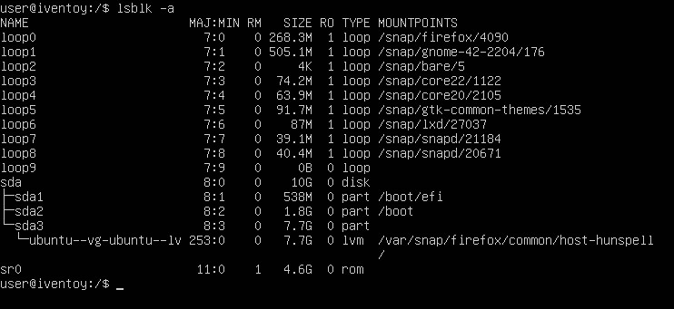
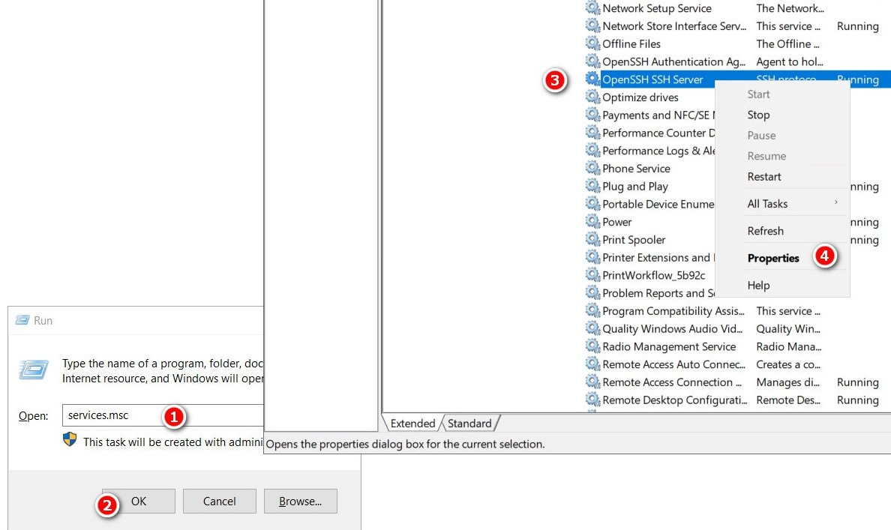

Guider
Operativsystem som har installerats på Hyper-V VM och konfigurerats för att köra iVentoy
Ubuntu Server med GUI
Denna är lätt att installera. Tanken med denna guiden är att admin skall kunna ladda ner ISO:n på VM:et.
Minsta storlek på VM: 22 GB
Ubuntu Server utan GUI
Lite krånglig att få igång. Guiden är anpassad för att göra VM:et minimalt med en symlink till ISO-filer.
Minsta storlek på VM: 12 GB
Windows Server 2022 Standard utan GUI
Lite krånglig att få igång. Guiden är anpassad för att göra VM:et minimalt med en symlink till ISO-filer.
Minsta storlek på VM: 12 GB
Ubuntu Server med GUI
tips
Om du inte har tidigare erfarenhet av Linux läs detta först.
Installation av Ubuntu Server med GUI
Ladda ner Ubuntu Server 22.04.4 LTS och montera ISO:n i ett VM på Hyper-V som är minst 22 GB.
Ta bort bocken på "Enable Secure Boot" på Security fliken och boota från DVD.
Tryck Enter under installation för att gå vidare. Navigera med Tab . Ändra inget förutom "Layout" till svenskt tangentbord.
Starta om efter installation och tryck Ctrl + D för att gå tillbaka till inloggningen om inte det sker automatiskt. Vid krångel tryck Ctrl + C. Börja med att mata in följande för att uppdatera:
sudo apt-get update && sudo apt-get upgrade
GUI installeras med:
sudo apt install ubuntu-desktop
Efter installationen starta om med:
sudo shutdown -r now
Installera även lite extra drivrutiner:
sudo apt install linux-image-extra-virtual
Enhanced Session
Enhanced Session är inte nödvändigt men underlättar hanteringen av VM:et. För att få det att fungera med Ubuntus grafiska
gränssnitt mata in cd ~/Downloads/ i ett terminalfönster. För att ladda ner mjukvaran mata in:
wget <https://raw.githubusercontent.com/Hinara/linux-vm-tools/ubuntu20-04/ubuntu/20.04/install.sh>
Mata in sudo chmod +x install.sh för att tilldela rättighet att köra filen och starta installationen med
sudo ./install.sh. Starta om enheten med sudo shutdown -r now eller sudo reboot och mata därefter in
cd ~/Downloads/ och sudo ./install.sh igen. Starta sedan om enheten igen.
Starta Powershell som admin på Windows-värddatorn och mata in:
Set-VM -VMName “iVentoy_Ubuntu_Server” -EnhancedSessionTransportType HvSocket
Ersätt “iVentoy_Ubuntu_Server” med namnet på ditt eget VM. Starta om Ubuntu igen. Inloggningsrutan är nu förändrad på Ubuntu (ersatt med xorg display server ) men Enhanced Session är aktiverad och det flyter på bättre.
Installation av iVentoy
Öppna Firefox och gå till https://github.com/ventoy/PXE/releases och ladda ner Linux-versionen av iVentoy.
Ladda även ner filen "sha256.txt". Öppna ett terminalfönster och navigera till /Downloads och mata in
sha256sum iventoy-1.0.20-linux-free.tar.gz. Öppna filen "sha256.txt" i filutforskaren genom att klicka på den.

Jämför kontrollsumman som skapades med den som finns för Linux-versionen (översta raden) i textfilen. Om dem inte är identiska så ladda ner filen på nytt.
Gå till mappen "Downloads" i filutforskaren och högerklicka på "iventoy-1.0.20-linux-free.tar.gz" och välj “Extract here”. Ladda ner en Windows 10 ISO-fil, välj (English - USA), och flytta den till mappen "iso" i iVentoy-mappen.
Statisk IP
Navigera till mappen netplan med cd /etc/netplan/. Mata sen in sudo nano och tryck Tab två gånger och sen Enter för att öppna filen i Nano.

Redigera filen så att den ser ut som ovan. Använd egna IP-nummer etc. Var noga med blankstegen. Spara med Ctrl + S. Avsluta med Ctrl + X. Testa om inställningarna och formateringen är korrekt med sudo netplan try.

Om det ser ut som ovan så tryck Enter. Varningsmeddelandet kan ignoreras.

iVentoy startas från ett terminalfönster med sudo bash iventoy.sh start alternativt sudo ./iventoy.sh start. Håll ner Ctrl och klicka på första länken eller öppna Firefox och gå till http://127.0.0.1:26000 för att använda
iVentoys grafiska gränssnitt. Klicka för fler val och inställningar
Ubuntu Server utan GUI (nästan)
- Installation av Ubuntu Server med terminal UI
- Installation av iVentoy
- Montera ISO
- Skapa en symbolisk länk
- Statisk IP
Installation av Ubuntu Server med terminal UI
tips
Om du inte har tidigare erfarenhet av Linux läs detta först.
Ladda ner Ubuntu Server 22.04.4 LTS och montera ISO:n i ett VM på Hyper-V som är minst 12 GB.
Ta bort bocken "Enable Secure Boot" på Security fliken och boota från DVD.
Tryck Enter under installation för att gå vidare. Navigera med Tab . Ändra inget förutom vid "Layout" till svenskt tangentbord.
Starta om efter installation och tryck Ctrl + D för att gå tillbaka till inloggningen om inte det sker automatiskt. Vid krångel tryck Ctrl + C. Börja med att mata in följande för att uppdatera systemet:
sudo apt-get update && sudo apt-get upgrade
notera
iVentoys grafiska gränssnitt kan nås via extern webbläsare. Programvara kan överföras via en ISO eller t.ex. SCP. Installering av Firefox & Xorg är valfritt då Ubuntu kan köras "headless".
Installation av Firefox & Xorg
iVentoy kräver en webbläsare för att kunna ändra inställningar så mata in följande i terminalfönstret för att installera Firefox med Xorg X display server:
sudo apt install firefox xorg
Starta Firefox genom att mata in startx (xorg) i terminalfönstret och sen firefox i nästa fönster:

Installation av iVentoy
När Firefox startat gå till https://github.com/ventoy/PXE/releases och ladda ner senaste Linux-versionen och filen "sha256.txt".
För att avsluta Firefox tryck Ctrl + Q och skriv sedan exit i nästa fönster för att avsluta (xorg).
Från terminalfönstret laddar man ner med:
wget https://github.com/ventoy/PXE/releases/download/v1.0.20/iventoy-1.0.20-linux-free.tar.gz
Textfil:
wget https://github.com/ventoy/PXE/releases/download/v1.0.20/sha256.txt
Github kan krångla men då funkar curl:
curl -O https://github.com/ventoy/PXE/releases/download/v1.0.20/iventoy-1.0.20-linux-free.tar.gz
Textfil:
curl -O https://github.com/ventoy/PXE/releases/download/v1.0.20/sha256.txt
Filerna hamnar i mappen man är i. Om curl inte är installerad, installera med sudo apt install curl.
Navigera till hemmappen med cd. Mata först in cd /snap/firefox/common/Downloads, eller annan mapp om man använt curl, och sen följande kommandorad för att jämföra genererad sha256 med den som finns i textfilen:
sha256sum iventoy-1.0.20-linux-free.tar.gz | sha256sum sha256.txt -c

Det finns tre kontrollsummor i sha256.txt filen men endast Linux-versionen kan jämföras. Kolla så att det står "OK" vid Linux-versionen. Packa upp arkivet till user-mappen genom att mata in:
tar -xf iventoy-1.0.20-linux-free.tar.gz /home/user
tips
Ubuntu Server har ingen “scrollback buffer”. För att kunna se stora textflöden får man köra en pipe.
Exempel: tar --help | less. Piltangent ned kör en rad åt gången och mellanslag kör en sida. Avsluta genom att trycka Q.
Montera ISO
Använd Imgburn (Windows) för att skapa en ISO-fil av Windows 10 ISO och eventuell autounattend.xml och anslut den till Ubuntu Server VM:et i Hyper-V.

Mata in lsblk -a för att lista alla "block size" enheter. "sr0" är den optiska enheten listad som "rom" men är ej monterad.
Mata in sudo mount /dev/sr0 /home/user/iventoy-1.0.20/iso/ för att montera den optiska enheten i iVentoys iso-mapp. Om ISO:n tas bort eller VM:et startas om måste mount köras igen. För att råda bot på detta konfigurerar man enligt följande:
sudo chown -R $USER:$USER /home/user/iventoy-1.0.20/iso
Ägarskap över mappen och dess undermappar flyttas nu till användaren (Kontrollera så att sökvägen är rätt beroende på vilka steg du följt ovan). Autostart konfigureras så här:
sudo nano /etc/fstab

Lägg till följande rad längst ner:
/dev/sr0 /home/user/iventoy-1.0.20/iso udf,iso9660 user,utf8 0 0
Spara med Ctrl + S och stäng fönstret med Ctrl + X. Den optiska enheten monteras nu automatiskt vid uppstart i iVentoys iso-mapp.
Kopiera eventuell autounattend.xml-fil till iVentoys skriptmapp:
cp /home/user/iventoy-1.0.20/iso/autounattend.xml /home/user/iventoy-1.0.20/user/scripts/
Skapa en symbolisk länk
Om man monterar den virtuella optiska enheten på en annan plats som exempelvis /mnt/dvd/ så kan man göra en symlink så att den läses från en annan mapp. I exemplet nedan har en ISO-fil på den optiska virtuella enheten länkats till iVentoys iso-mapp.
ln -s /mnt/dvd/Windows10.iso /home/user/iventoy-1.0.20/iso/Windows10.iso
Detta skapar en sym link i iVentoys "iso"-mapp. Växeln -s står för symbolic.
Statisk IP
Navigera till /etc/netplan/. Mata sen in sudo nano och tryck Tab två gånger och sen Enter för att öppna .yaml-filen i Nano.

Redigera filen så att den ser ut som ovan. Fyll i eget IP-nummer etc. Var noga med blankstegen. Spara med Ctrl + S och stäng med Ctrl + X. Testa om inställningarna och formateringen är korrekt med sudo netplan try.

Om det ser ut som ovan så tryck Enter. Varningsmeddelandet kan ignoreras.
iVentoy startas med sudo bash iventoy.sh start alternativt sudo ./iventoy.sh start. Klicka för fler val och inställningar
Windows Server 2022 Standard
Start
Installera i VM. Lösenord ombeds bytas vid första inloggningen och därefter startar Sconfig:

Välj genom att skriva in en siffra och tryck Enter. För att exempelvis ändra nätverksinställningar så väljer man siffran 8:

Man guidas genom processen för konfigurationen.
I första menyfönstret väljer man 15 för att komma till Powershell. För att komma tillbaka till menyfönstret mata in sconfig och tryck Enter.
tips
Med Ctrl + Alt + Shift + ? så visas en lista över kortkommandon.
Stäng av brandväggen
För att se status på brandväggen mata in:
Get-NetFirewallProfile | Format-Table
Stäng av brandväggen med:
Set-NetFirewallProfile -Profile Domain, Public, Private -Enabled False
ISO
Ladda ner iVentoy https://github.com/ventoy/PXE/releases på en extern enhet och packa upp filen. Skapa en ISO med Imgburn och lägg till iVentoy, OS-ISO och eventuell skriptfil.

Montera ISO:n i VM:et. Lista enheter med Get-Volume. ISO:n är monterad på enhet D.
Mata in cd d: och sen ls för att se filerna på D. Flytta iVentoy-mappen till enhet C med:
cp .\iventoy-1.0.20\ c: -recurse
och eventuell skriptfil med:
cp .\autounattend.xml c:\iventoy-1.0.20\user\scripts\
Länka Windows.iso-filen symboliskt:
New-Item -Path C:\iventoy-1.0.20\iso\Windows.iso -ItemType SymbolicLink -Value D:\Windows.iso
Installera iVentoy
För att iVentoy skall kunna köras måste Microsoft Visual C++ Redistributable laddas ner och installeras.
För att ladda ner mata in:
wget "https://aka.ms/vs/17/release/vc_redist.x64.exe" -OutFile "C:\vc_redist.x64.exe"
Gå till C:\ med cd c: och installera med:
.\vc_redist.x64.exe
Ta bort filen med rm .\vc_redist.x64.exe -force. Gå in i iVentoy-mappen med cd .\iventoy-1.0.20\. Mata in tree /f för att se strukturen i mappen. För att starta iVentoy mata in .\iVentoy_64.exe.
Ett litet fönster dyker upp som kan gömma sig bakom terminalfönstret. Klicka på Exit knappen när iVentoy skall avslutas.
Öppna en webbläsare på en extern enhet och skriv in adressen till datorn iVentoy är installerad på och ange port 26000. Exempel: http://192.168.10.22:26000 Klicka för snabbguide.
Snabbguide för iVentoy 1.0.20
- Starta från Windows
- Starta från Linux Ubuntu
- Öppna gränssnittet externt
- iVentoys gränssnitt
- iVentoy-mappen
- Klienten
Starta från Windows
iVentoy startas genom att klicka på iVentoy_64.exe varvid en webbläsarflik startas tillsammans med ett litet programfönster och en ikon i aktivitetsfältet.

Om iVentoy inte startar måste Microsoft Visual C++ Redistributable installeras. iVentoy är kodad för att starta med webbläsaren Chrome och har man inte den installerad, eller vill använda en annan webbläsare, så kan man skapa och konfigurera en genväg.
Högerklicka på den skapade genvägen och välj "Properties". I slutet av sökvägen adderas /F. Nästa gång iVentoy startas öppnas en flik i standardwebbläsaren.
Starta från Linux Ubuntu
Starta iVentoy med sudo bash iventoy.sh start eller sudo ./iventoy.sh start.
Öppna gränssnittet externt
iVentoy kör gränssnittet på http://127.0.0.1:26000. Det går dock att öppna från en annan dator på http://x.x.x.x:26000, där x.x.x.x är adressen till datorn iVentoy-servern körs ifrån.
iVentoys gränssnitt
Boot information

Fönstret som öppnas vid start.
-
Välj server-IP:t iVentoy skall köras ifrån.
-
IP-spannet som är begränsad till 20 nummer i gratisläget kan ställas in här för intern DHCP.
-
Startknapp.

När iVentoy startats visas enheter som läst in bootloader-filen.
-
Visar IP-adresserna som delats ut och tillhör spannet (IP Pool).
-
Enhetens MAC-adress.
-
MAC Address Lookup. Klicka för att visa tillverkaren av NIC:et:

Configuration

- Kan ändras om något obskyrt program använder porten.

iVentoy har tre lägen för DHCP-servern:
-
Internal: iVentoy kör intern DHCP.
-
External: En extern DHCP-server kör i samma LAN/VLAN.
-
ExternalNet: DHCP-servern kör i ett annat LAN/VLAN.
MAC Filter
-
Välj att neka eller tillåta utvalda MAC-adresser att boota från iVentoy.
-
Lägg till eller ta bort MAC-adresser.
-
Mata in en MAC-adress och klicka för att se tillverkaren.
Image Management
-
Klicka på ISO-filen som skall användas.
-
Lägg till en eventuell skriptfil.
iVentoy-mappen

- I mappen iso placeras ISO-filer då iVentoy bara läser dessa från denna mappen. Det går dock att göra symboliska länkar till mappen om ISO-filerna är placerade någon annanstans.
Exempel:
-
Windows:
cmd:
mklink C:\iventoy-1.0.20\iso\Windows.iso D:\Downloads\Windows.isoPowershell:
New-Item -Path C:\iventoy-1.0.20\iso\Windows.iso -ItemType SymbolicLink -Value D:\Windows.iso -
Linux:
ln -s /mnt/dvd/Windows.iso /home/user/iventoy-1.0.20/iso/Windows10.iso
- Mappen scripts är en undermapp till user som skriptfiler kan placeras i. Skriptfiler kan dock placeras godtyckligt om bara sökvägen anges.
Klienten
Välj alternativ med Enter och bläddra med ▲ ▼.
Inställningar
Extern DHCP-server inom samma nät
I Scope Options måste följande läggas till:
-
Option 066: Adressen till iVentoy-servern fylls i här.
-
Option 067: Filnamnet som klienten skall ladda.
Växlar
iVentoy har två växlar som kan utnyttjas vid behov på kommandoraden.
-
-AiVentoy lyssnar via http://0.0.0.0:26000 d.v.s. alla enheter i nätet. Använd vid anslutningsproblem. -
-RStartar och kör servern med senast valda konfiguration.
Exempel:
-
Linux:
sudo bash iventoy.sh -A start -
Windows:
.\iventoy.exe -R
iVentoy HTTP URL
Filer i mapparna iso och user, respektive deras undermappar, kan nås direkt via sökväg.
Exempel:
http://192.168.10.100:16000/iso/Windows.iso http://192.168.10.100:16000/user/Software/Tetris.7z
ISO-filer kan också nås via riso + ISO-ID eller PMD5.
Exempel:
http://192.168.10.145:16000/riso/id/1.iso http://192.168.10.100:16000/riso/pmd5/a941e235e8cc9b3dcd1afcd43468ed58.iso
Det går också att bläddra i ISO-filerna med eiso + ISO-ID eller PMD5.
Exempel:
http://192.168.10.20:16000/eiso/id/1.iso> http://192.168.10.20:16000/eiso/pmd5/e73acde9367248eb41d639853fbf145f.iso

Skript
En skriptfil ger möjligheten att få en obevakad installation och kan samtidigt, i viss mån, förhindra installation av icke önskvärd programvara. Skriptinställningarna kan ställas in på t.ex. denna sidan och går att ladda ner samt sparas som bokmärke. Jag har använt dessa inställningar för Windows 10.
Länkar till skriptet blir en saftig remsa. Klicka för att se exempel.
https://schneegans.de/windows/unattend-generator/?LanguageMode=Unattended&UILanguage=en-US&UserLocale=sv-SE&KeyboardLayout=041d%3A0000041d&GeoLocation=221&ProcessorArchitecture=amd64&ComputerNameMode=Random&TimeZoneMode=Implicit&PartitionMode=Unattended&PartitionLayout=GPT&EspSize=300&RecoveryMode=Partition&RecoverySize=1000&WindowsEditionMode=Unattended&WindowsEdition=pro&UserAccountMode=Unattended&AccountName0=Admin&AccountPassword0=password&AccountGroup0=Administrators&AccountName1=&AccountName2=&AccountName3=&AccountName4=&AutoLogonMode=Own&PasswordExpirationMode=Default&LockoutMode=Default&DisableSystemRestore=true&EnableLongPaths=true&HardenSystemDriveAcl=true&AllowPowerShellScripts=true&DisableLastAccess=true&NoAutoRebootWithLoggedOnUsers=true&TurnOffSystemSounds=true&DisableAppSuggestions=true&DisableWidgets=true&WifiMode=Interactive&ExpressSettings=DisableAll&Remove3DViewer=true&RemoveCalculator=true&RemoveCamera=true&RemoveClipchamp=true&RemoveClock=true&RemoveCopilot=true&RemoveCortana=true&RemoveDevHome=true&RemoveFamily=true&RemoveFeedbackHub=true&RemoveGetHelp=true&RemoveInternetExplorer=true&RemoveMailCalendar=true&RemoveMaps=true&RemoveMathInputPanel=true&RemoveNews=true&RemoveNotepadClassic=true&RemoveOneDrive=true&RemoveOneNote=true&RemoveOpenSSHClient=true&RemovePaint=true&RemovePaint3D=true&RemovePeople=true&RemovePhotos=true&RemovePowerAutomate=true&RemovePowerShellISE=true&RemoveQuickAssist=true&RemoveSkype=true&RemoveSnippingTool=true&RemoveSolitaire=true&RemoveStickyNotes=true&RemoveTeams=true&RemoveGetStarted=true&RemoveToDo=true&RemoveVoiceRecorder=true&RemoveWeather=true&RemoveWindowsMediaPlayer=true&RemoveZuneMusic=true&RemoveWindowsTerminal=true&RemoveWordPad=true&RemoveXboxApps=true&RemoveYourPhone=true&SystemScript0=&SystemScriptType0=Cmd&SystemScript1=&SystemScriptType1=Ps1&SystemScript2=&SystemScriptType2=Reg&SystemScript3=&SystemScriptType3=Vbs&DefaultUserScript0=&DefaultUserScriptType0=Reg&DefaultUserScript1=&DefaultUserScriptType1=Reg&DefaultUserScript2=&DefaultUserScriptType2=Reg&DefaultUserScript3=&DefaultUserScriptType3=Reg&FirstLogonScript0=&FirstLogonScriptType0=Cmd&FirstLogonScript1=&FirstLogonScriptType1=Ps1&FirstLogonScript2=&FirstLogonScriptType2=Reg&FirstLogonScript3=&FirstLogonScriptType3=Vbs&UserOnceScript0=&UserOnceScriptType0=Cmd&UserOnceScript1=&UserOnceScriptType1=Ps1&UserOnceScript2=&UserOnceScriptType2=Reg&UserOnceScript3=&UserOnceScriptType3=Vbs&WdacMode=Skip
En volymlicensnyckel måste läggas till i skriptet för att en obevakad installation skall kunna genomföras. Leta upp raden "0000-0000-0000-0000" i autounattend.xml och ersätt den med W269N-WFGWX-YVC9B-4J6C9-T83GX, i detta fall en volymlicensnyckel för Windows 10 Pro.
<ProductKey>
<Key>00000-00000-00000-00000-00000</Key>
</ProductKey>
En annan lösning är att ladda ner Windows genom UUP dump och välja senaste versionen och vad som skall ingå i ISO:n.
tips
Om autounattend.xml läggs till som en egen ISO i samma VM som Windows ISO:n upptäcks skriptet och körs vid installationen. Edit: Man kan nu ladda ner filen som ISO.
notera
Vid installation till VM kan man bli tvungen att logga in efter installationen, även om man har specat autologin i skriptet när Enhanced Session är aktiverad.
Installation
Ubuntu
Installation:
sudo apt-get install openssh-server
Aktivera SSH:
sudo systemctl enable ssh --now
Verifiera att SSH körs:
sudo systemctl status ssh
Starta SSH:
sudo systemctl start ssh
Logga in med användarnamn:
ssh userName@Your-server-name-IP
Windows
-
Tryck på Windows-tangenten och sök efter ”Valfria funktioner”. (Optional features)
-
Öppna ”Inställningar” > ’Appar’ > ”Valfria funktioner” och kontrollera om OpenSSH-klienten är installerad - om det behövs installerar du den via ”Lägg till valfri funktion”
-
Öppna Powershell och anslut till önskad server med
ssh name@server -
Första anslutningen: Bekräfta Host Key Fingerprint med ”Yes” och ange lösenord.
Om Linux
Kort sammanfattning
Linux skiljer på gemener och VERSALER. Sökvägar använder / istället för \. Linux är öppen källkod och är mer konfigurerbart än Windows.
Några (kort) kommandon
Några kommandon man bör känna till som novis.
Filöverföring Windows ↔ Linux
Utöka utrymme på disk
Några (kort) kommandon
Kortkommandon
-
Ctrl + D Skickar [End-of-File] till den nuvarande processen som då avslutas.
-
Ctrl + C Avslutar [kill] process t.ex. vid loop.
-
Tab för tabulatorkomplettering.
-
Tryck Tab två gånger för att lista alternativ på kommando, filer eller mappar.
-
Tryck på piltangenterna ▲ ▼ för att bläddra i kommandohistoriken.
Kommandon
-
sudo suväxlar till administratörsläge. Kör man i detta läget slipper man skrivasudooch ange lösenord. -
pwdvisar var man är relativt hemmappen. -
treeger överblick över mappar och filer. Skrivtreei terminalfönstret så kommer förslag upp över hur man installerar kommandot. -
cdhoppar direkt till hemmappen. -
ip avisar bl.a. ip och nätmask som CIDR-notation. -
jsom i Autojump. Så att man kan hoppa direkt till mappar. Kräver installation.
Filöverföring Windows ↔ Linux
SCP - Secure Copy Protocol
Enhanced Session funkar inte alltid för att föra över filer. Enheter kan kopplas till vid uppstart med Enhanced Session men det kanske inte heller alltid funkar.
För att flytta filer till Ubuntu Server VM finns det dock andra sätt. Navigera till “Home directory” med kommandot cd
och mata in sudo chown user Downloads där user är användarnamnet vid inloggning på Ubuntu. Kommandoraden ger användaren
”user” ägarskap över mappen Downloads. Öppna Powershell (admin) genom att shift-högerklicka i en mapp som en fil ska överföras
från med SCP. Mata in filnamn och mottagare enligt följande:
scp fil.xxx användarnamn@IP-till-Ubuntu:/sökväg/till/mapp
Exempel:
scp gparted-live-1.6.0-3-amd64.iso user@192.168.37.3:/home/user/Downloads
Lösenord kommer att utkrävas av mottagaren (Ubuntu).
För att överföra från Linux till Windows måste SSH installeras först.
- Sök på Optional Features
- Klicka

- Klicka på Add a feature I nästa ruta välj att installera OpenSSH Client och Server.

- Tryck Win + R och mata in services.msc
- Klicka OK
- Bläddra till OpenSSH SSH Server
- Högerklicka och välj Properties

- Välj Automatic
- Klicka på Apply
Starta om datorn.
För att överföra till Windows mata in så här:
scp min.fil användarnamnWindows@ip.till.windows:C:/Users/Användare
Exempel:
scp iventoy.sh administrator@192.168.37.65:C:/Users/Olle
Observera /.

När frågan om fingerprint dyker upp skriv "yes".
WinSCP
Smidigaste sättet att överföra är med WinSCP. Det överför åt båda hållen och kräver ingen förkonfiguration.
WinSCP hämtas här: https://winscp.net/eng/download.php
Samba - SMB
För att installera Samba mata in:
sudo apt update
sudo apt install samba
Skapa en delad mapp med mkdir /home/user/Delad/ där user är användarnamnet. För att konfigurera Samba mata in sudo nano /etc/samba/smb.conf. Längst ner i fönstret läggs följande rader till:
[Delad]
path = /home/user/Delad
available = yes
valid users = user
read only = no
browseable = yes
public = yes
writable = yes
Tryck Ctrl + S för att spara och Ctrl + X för att gå tillbaka till kommandotolken.
Mata in sudo service smbd restart för att inställingarna skall få effekt. Om brandväggen är aktiverad tillåt Sambas trafik genom att mata in sudo ufw allow samba. Skapa ett användarkonto med:
sudo smbpasswd -a user
Användaren user som skapas är en existerande systemanvändare. Användaren måste finnas i systemet för att kunna läggas till. Skapa ett lösenord när det efterfrågas. Öppna filhanteraren i Windows och skriv \\ip-adressen-till-sambaenheten\Delad. Användarnamn och lösenord efterfrågas.

Vid problem kan man testa att ändra “Enable insecure guest logons” till "Enable" i Group Policy.
Python
Mata in denna raden från en mapp du vill dela:
python3 -m http.server 8080
För att komma åt mappen och dess undermappar anslut med http://värdadress:8080 på en extern webbläsare.
Utöka utrymme på disk
En guide för LVM
Autoinställningarna vid installation av Ubuntu Server använder sig av LVM.

Om de vanliga diskverktygen inte klarar av denna strukturen måste man använda sig av terminalen. Kommandon som är användbara inför utökning av utrymmet:
-
df -hvisar partitionsstorleken där växeln -h är ”human readable”. -
sudo vgdisplayvisar storleken på Volume Group. -
sudo lvdisplayvisar Logical Volumes.
För att utöka utrymmet så måste man börja med VM:et i Hyper-V.

- Välj disken du vill utöka.
- Klicka på "Edit".
- Välj "Expand" och sätt storlek i nästa steg.
För att utöka utrymmet matar man först in ..
sudo lvextend -l +100%FREE /dev/ubuntu-vg/ubuntu-lv
.. och för att utöka filsystemet över utrymmet:
sudo resize2fs /dev/mapper/ubuntu--vg-ubuntu--lv
Klart.
Autojump
Autojump kan (nästan) ersätta kommandot cd i Ubuntus kommandotolk. Om man navigerat in i en mapp med cd sparar Autojump sökvägen till mappen.
Mata in j och de två första bokstäverna på mappnamnet du vill gå till och tryck först Tab och sen Enter för att gå till mappen.
Installera Autojump med sudo apt install autojump. Mata sen in cd för att gå till hemmappen. För att länka Autojump
till Ubuntus kommandotolk Bash, mata in sudo nano .bashrc som öppnar filen i textredigeraren nano.
Lägg till . /usr/share/autojump/autojump.sh i slutet av filen. Spara med Ctrl + S och lämna fönstret med Ctrl + X.
Starta om terminalen med Ctrl + D
notera
Mappar måste först navigeras till med kommandot cd efter installationen av Autojump för att sökvägarna skall registreras.
Gparted
Gparted är en partitionshanterare. Versionen för den här guiden är Gparted Live som laddas ner via https://gparted.org/download.php. Montera ISO:n i ditt VM och sätt den som första boot.

Som exempel används Windows som har en Recovery-partition om 1000 MB som tas bort och vars utrymme tilldelas (C:)-partitionen.
Gör inställningar enligt videon. När det kommer till ändring av partitionen så går det att ändra genom att dra i flikarna eller skriva in önskad storlek, alternativt klicka på + eller - knapparna.
varning
Det finns alltid en liten risk att det går åt pipan. En backup är en bra försäkring.
Imgburn
Konfigurering av Imgburn
Imgburn konfigureras enligt ovan för att ta bort storleksbegränsningen av ISO-filer och för att starta ISO-skaparläget som standard.
Klicka här för att ladda ner Imgburn.
Video
Ljud på!
Ljud på!